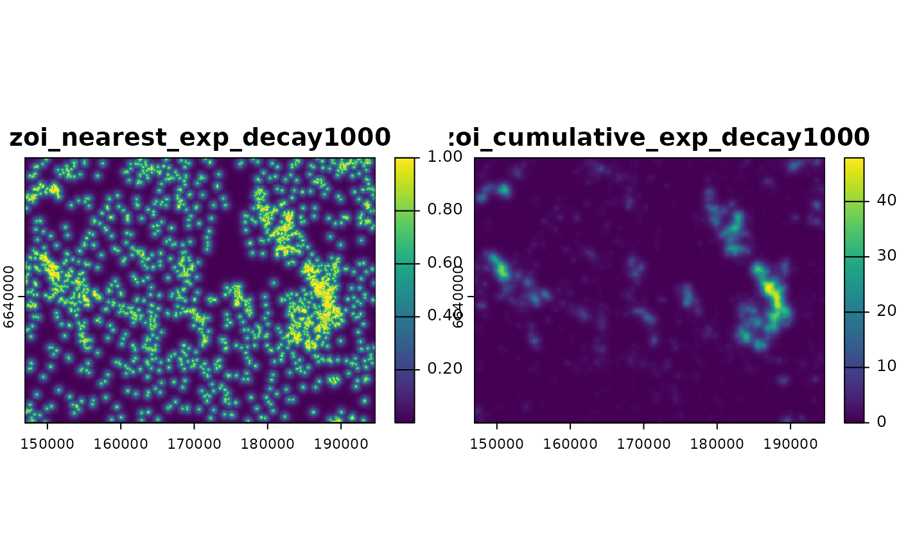
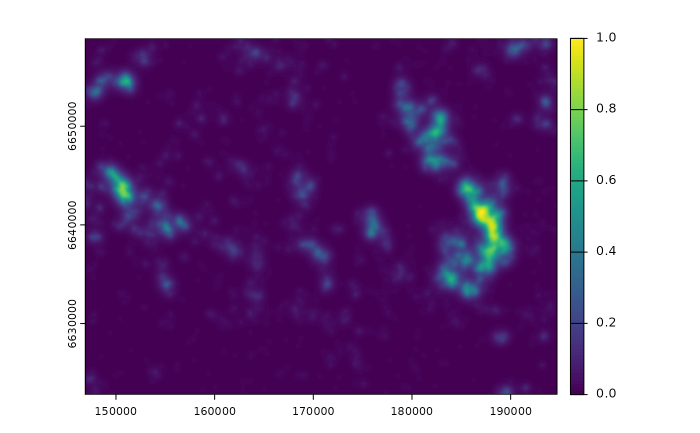
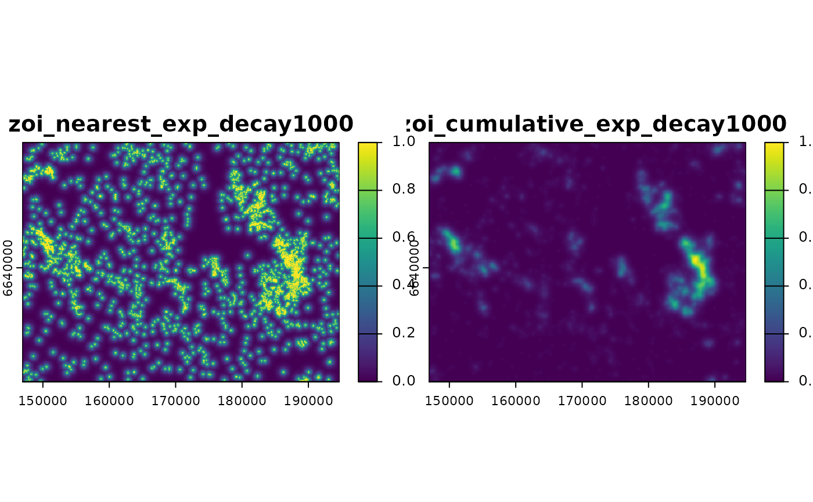
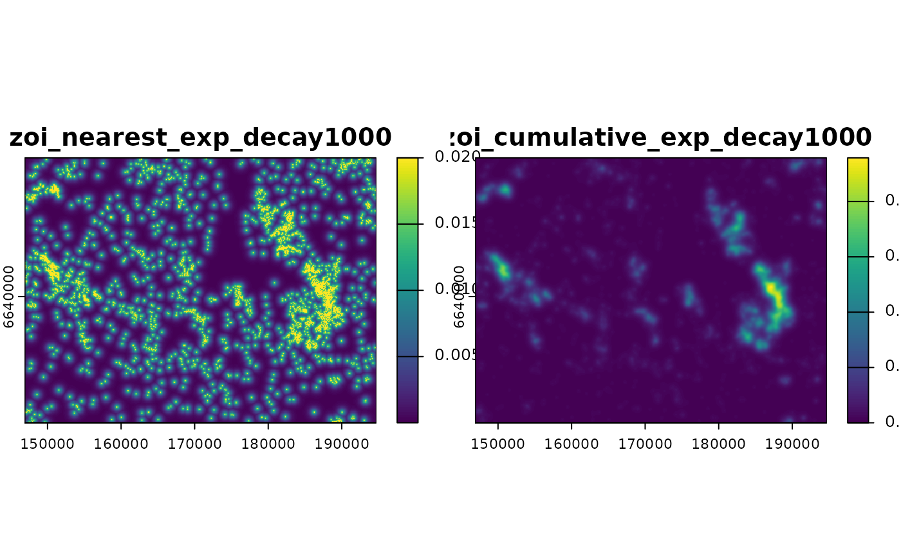

Rescales raster values to a given range (by default, to the range 0,1).
Usage
raster_rescale(x, to = c(0, 1), from = NULL)Arguments
- x
[SpatRaster]
Raster object or colletion of rasters whose values will be rescaled.- to
[numeric(2)=c(0,1)]
Range of final values (in the format c(min,max)) to which the raster will be rescaled.- from
[numeric(2)=NULL]
Range of original values (in the format c(min,max)) from which the raster will be rescaled. IfNULL, the minimum and maximum values fromxare used.
Value
A raster object (or collection of rasters) with values rescaled to a given range (e.g. to the interval 0,1).
Examples
library(terra)
f <- system.file("raster/sample_area_cabins.tif", package = "oneimpact")
cabins <- terra::rast(f)
# calculate influence
ni <- calc_zoi_nearest(cabins, radius = 1000, type = "exp_decay")
ci <- calc_zoi_cumulative(cabins, radius = 1000, type = "exp_decay",
zeroAsNA = TRUE)
plot(c(ni, ci))

# rescale
plot(raster_rescale(ci)) # rescale to [0,1]

plot(raster_rescale(c(ni, ci))) # rescale both to [0,1]

plot(raster_rescale(c(ni, ci), to = c(0, 100))) # rescale to [0,100]
plot(raster_rescale(c(ni, ci), from = c(0, 50))) # rescale to [0,1] from [0,50]
